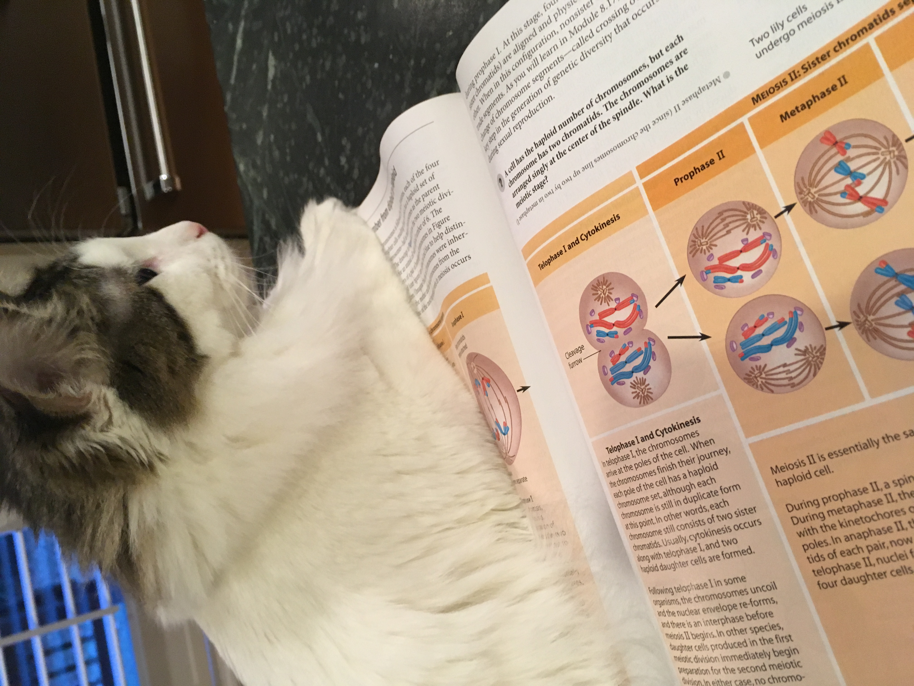

Bacon Q Dog

Bacon Q. Dog is a 9yr old labradoodle. He prefers to spend his days lounging among the three different beds/couches that his family has gifted him. He enjoys a walk or two around the neighborhood, as long as he can pretend that he doesn't see any of the other animals to avoid the embarrassment of not wanting to admit he has no wolf-like skills in chasing them.
At night just as the rest of the family is ready to relax, Bacon suddenly wants to release all of his energy. He will place his toys on a mini couch and frantically drag the couch around, giving his toys "a ride." There is also a lot of rolling. Lots and lots of rolling.
Photo Gallery


Likes
- Likes
- Belly rubs
- Sneaking onto the couch
Milktea

Milktea is a Scottish fold with a personality of a princess. She loves her veggies and refuses to eat anything dropped on the ground. She makes it clear when she has a demand of any sort by complaining in a loud, distinguished manner. If what she says could be translated, it probably would be, “This is atrocious, the water container has been empty for the 3rd time this week. I want to see the manager.”
Despite her cuteness and royalty, she actually suffers from a genetic disorder intentionally brought upon by humans. I highly advise against keeping a Scottish fold because they are in constant pain when they reach around 2 years old. Cartilage accumulates around her paw joints and tail joints and it becomes painful for them to even walk. She is living evidence of human’s cruelty of breeding animals to look pretty while sacrificing the animals’ health.
Photo Gallery


Likes
- She loves individual corn kernels served on human hands
- She enjoys sitting royally on suitcases to claim ownership of her humans
- She prefers to be alone and sit on soft surfaces in her free time
Pappy

Pappy is a 7 year old morkie. Most days he prefers to spend it laying around the house in his various favorite spots. Most of the time you can find him lying in his bed. He loves going with walks, but still hasn’t figured out how to approach other dogs without scaring them off. He loves his family and loves to keep intruders away even for his size.
He also enjoys playing with his favorite basketball. He loves pushing it around, scratching it, or even talking with it. He also loves his little stuffed animal too. Pappy also loves to be scratched and will ask you to keep scratching until he is happy.
Photo Gallery


Likes
- Taking naps with his paws in the air
- Getting scratches or belly rubs
- Any kind of dog treats
Luna

Luna is a German shepherd mix and a fireball of energy. Oftentimes, destroying anything in her path she will take and hide all your socks, shoes, and clothes for her to chew on. She loves playing catch at the park, it always gives her the zoomies.
Luna is a very jealous, loving, and protective dog. She really embraces her inner chihuahua and will bark at any stranger, car, or noise at night. She makes the perfect guard dog. But she is not at all aggressive. Luna is all bark no bite!
Photo Gallery


Likes
- Chicken
- Park
- Belly Rubs
Luke

Luke is a six-year-old white cat; he is very energetic and likes to play fetch. Luke has one brother named Jesse. Luke’s favorite thing to eat are chicken cat treats.
Luke is very badly behaved. He often jumps up on furniture and drinks out of people’s water glasses. He also steals people’s jewelry and hides it in his bed. Luke knows several commands; he can sit, jump, follow, play fetch, and give people his paw.
Photo Gallery



Likes
- Luke likes salmon.
- Luke likes to play fetch with hair ties.
- Luke likes to sleep in laundry baskets.